Visualize gene set enrichment and over-representation analysis results
Source:R/enrichmentplot.R
EnrichmentPlot.RdGene set enrichment analysis identifies biological pathways, gene ontologies, or functional categories that are statistically over-represented among a list of genes of interest (e.g., differentially expressed genes from a single-cell RNA-seq experiment). Rather than interpreting individual genes in isolation, enrichment analysis places gene-level results into a broader biological context, revealing which processes, functions, or diseases are perturbed.
EnrichmentPlot generates publication-quality visualizations for enrichment
results across eight distinct plot types, each suited to a different analytical
perspective:
bar — Horizontal bar chart of the top enriched terms, ordered by significance. Best for a quick overview or when showing a small number of terms.
dot — Dot plot where x-axis shows a continuous metric (default:
GeneRatio), dot size reflects gene count, and dot color reflects significance. Ideal for comparing terms along two dimensions simultaneously.lollipop — Lollipop chart combining dot and bar aesthetics. Similar to the dot plot but with stems emphasizing the ranking.
comparison — Side-by-side dot plot comparing enrichment across groups (e.g., cell types, conditions). Requires
group_by.network — Network visualization where nodes are enriched terms and edges represent overlapping gene sets. Reveals functional modules and redundant terms.
enrichmap — Enrichment map similar to the network plot but optimized for large term sets (default
top_term = 100). Nodes are terms and edges represent gene overlap.wordcloud — Word cloud where term size reflects significance. Can display either enrichment terms (
word_type = "term") or individual gene symbols (word_type = "feature").heatmap — Heatmap of enrichment significance across groups (
group_byis mapped to columns). Useful for comparing enrichment patterns across multiple conditions or cell types.
The function auto-detects the input data format (clusterProfiler or enrichR) and delegates visualization to the appropriate plotthis plotting function.
Usage
EnrichmentPlot(
data,
top_term = NULL,
plot_type = c("bar", "dot", "lollipop", "network", "enrichmap", "wordcloud",
"comparison", "heatmap"),
x_by = NULL,
size_by = NULL,
fill_cutoff_name = NULL,
fill_name = NULL,
values_fill = 0,
character_width = 50,
expand = NULL,
word_type = c("term", "feature"),
split_by = NULL,
split_by_sep = "_",
facet_by = NULL,
facet_scales = NULL,
group_by = NULL,
group_by_sep = "_",
metric = "p.adjust",
cutoff = NULL,
palette = "Spectral",
xlab = NULL,
ylab = NULL,
...
)Arguments
- data
A data frame with enrichment results. Must be the output of a clusterProfiler function (
enrichGO,enrichKEGG,enrichPathway,enrichWP, etc.) or an enrichR result processed throughplotthis::prepare_enrichr_result(). The function auto-detects the format based on column names.- top_term
Integer. Number of top terms (by significance) to display per group/facet combination. Default:
6for all plot types except"enrichmap"which defaults to100. Note that terms are not filtered globally — the top terms are selected independently within each combination ofsplit_by,group_by, andfacet_bylevels.- plot_type
Character. The type of plot to generate. One of:
"bar","dot","lollipop","network","enrichmap","wordcloud","comparison", or"heatmap". See the Description section for guidance on choosing a plot type. Default:"bar".- x_by
Character. Column name(s) to use for the x-axis. Works only for
"dot"and"lollipop"plot types. Default:NULL(defaults to"GeneRatio"internally).- size_by
Character. Column name(s) to map to point size. Works only for
"comparison","dot", and"lollipop"plot types. Default:NULL(defaults to"GeneRatio"for comparison,"Count"for dot and lollipop).- fill_cutoff_name
Character. Legend label for terms that exceed the
cutoff(shown in gray). Applies to"comparison","dot", and"lollipop"plot types. Default:NULL(defaults to"Non-significant"whencutoffis set).- fill_name
Character. Legend title for the fill color scale (the significance metric). Applies to
"comparison","dot", and"lollipop"plot types. Default:NULL(auto-generated as"-log10(metric)").- values_fill
Numeric. The fill value for missing entries in the heatmap matrix. Used only for
"heatmap"plot type. Default:0.- character_width
Integer. Maximum character width for term descriptions before line-wrapping. Applies to all plot types; for
"heatmap"the wrapping is deferred to the Heatmap function. Default:50.- expand
Numeric vector of length 1, 2, or 4. Axis expansion factors passed to
plotthis::BarPlot(). Used only for"bar"plot type. Default:NULL(defaults toc(0.1, 0.6, 0, 0.6)).- word_type
Character. What to display in the wordcloud. One of
"term"(enrichment term descriptions) or"feature"(gene symbols from the enriched gene list). Used only for"wordcloud"plot type. Default:"term".- split_by
Character vector. Column name(s) in
datato split the data and generate separate plots for each unique value. Multiple columns are concatenated withsplit_by_sep. Default:NULL.- split_by_sep
Character. Separator used when concatenating multiple
split_bycolumns. Default:"_".- facet_by
Character vector. Column name(s) in
datato use for faceting (generating sub-panels within each plot). Default:NULL.- facet_scales
Character. Facet scale behavior —
"fixed"(same scales),"free","free_x", or"free_y". Default:NULL(defaults to"free_y"for bar, dot, lollipop, and comparison plots).- group_by
Character vector. Column name(s) in
datato group terms. Behavior depends onplot_type:"comparison"— Groups are shown as x-axis categories in a dot plot comparing enrichment across groups. Required for this type."heatmap"— Groups are used as the columns of the heatmap (mapped tocolumns_byinplotthis::Heatmap()).All other types —
group_byis not supported and will raise an error. Usefacet_byorsplit_byinstead.
Multiple columns are concatenated with
group_by_sep. Default:NULL.- group_by_sep
Character. Separator used when concatenating multiple
group_bycolumns. Used only for"comparison"plot type. Default:"_".- metric
Character. The column name in
datato use as the significance metric for ordering and coloring terms. Common choices are"p.adjust"(default),"pvalue", or"qvalue". When the metric is a p-value column, a \(-log_{10}\) transformation is applied automatically so that more significant terms have higher values.- cutoff
Numeric. A significance threshold to mark on the plot. Default:
NULL(no marking). The behavior depends onplot_type:"bar"— Adds a vertical dashed line at the transformed cutoff (e.g., \(-log_{10}(0.05)\))."dot","lollipop","comparison"— Terms above the cutoff are colored gray with the legend label fromfill_cutoff_name."heatmap"— Adds asterisk (*) labels to cells where the metric exceeds the cutoff."network","enrichmap","wordcloud"— No effect.
This parameter only marks terms — it does not filter them. Use
top_termto control how many terms are shown.- palette
Character. Color palette name for the fill scale. See
plotthis::show_palettes()for available palettes. Default:"Spectral".- xlab
Character. Custom x-axis label. Default:
NULL(auto-generated based on plot type andx_by/metric).- ylab
Character. Custom y-axis label. Default:
NULL(auto-generated based on plot type).- ...
Additional arguments passed to the underlying plotthis plotting function, determined by
plot_type:"bar""dot""lollipop""network""enrichmap""wordcloud""comparison""heatmap"
Value
A ggplot object (or a patchwork object when split_by
generates multiple plots and combine = TRUE), or a list of ggplot
objects if combine = FALSE. The specific return type depends on the
underlying plotthis function dispatched by plot_type.
Note
The function auto-detects clusterProfiler vs enrichR input format. For enrichR input, it must contain
P.valueandAdjusted.P.valuecolumns. If your enrichR results came from a different pipeline, pre-process them withplotthis::prepare_enrichr_result().The
cutoffparameter only marks terms — it does not filter them. To reduce the number of displayed terms, usetop_term.GeneRatiostrings (e.g.,"38/225") andBgRatiostrings are automatically converted to numeric values by dividing the numerator by the denominator.When using
group_bywithplot_type = "comparison",size_bydefaults to"GeneRatio"and each group's terms are shown side-by-side. Forplot_type = "heatmap",group_bybecomes the heatmap columns.group_byis not supported for"bar","dot","lollipop","network","enrichmap", and"wordcloud"— usefacet_byorsplit_byto separate groups for those types.For
plot_type = "wordcloud"withword_type = "feature", individual gene symbols are extracted from thegeneIDcolumn. Gene-level significance scores are aggregated by summing \(-log_{10}(p)\) values.
Input data formats
The function auto-detects the input format by checking for characteristic column names:
clusterProfiler (
enrichGO,enrichKEGG,enrichPathway, etc.) — recognized by the presence ofpvalue,p.adjust, andqvaluecolumns.enrichR (web-based enrichment tool) — recognized by the presence of
P.valueandAdjusted.P.valuecolumns. enrichR results are automatically converted to clusterProfiler-compatible format via plotthis'sprepare_enrichr_result().
If neither format is detected, the function stops with an error.
Metric transformation
When the metric is a p-value column (pvalue, p.adjust,
or qvalue), the function applies a \(-log_{10}\) transformation
so that more significant terms have higher values on the plot. The transformed
metric is stored internally as .metric. When cutoff is specified,
it is also transformed (e.g., p.adjust = 0.05 becomes a line at
\(-log_{10}(0.05) = 1.3\)).
For "bar", "dot", "lollipop", "comparison", and "heatmap" plot types,
GeneRatio (stored as strings like "38/225") and BgRatio
are automatically converted to numeric ratios.
Term ordering and selection
For each unique combination of split_by, group_by, and
facet_by levels, the function selects the top_term terms with
the smallest metric values (i.e., most significant). This ensures that each
facet or split shows its own most relevant terms rather than the globally
most significant ones. The default top_term is 6 for most plot types
and 100 for "enrichmap" (which benefits from showing more terms to reveal
the network structure of gene set relationships).
Examples
# \donttest{
set.seed(8525)
data(enrich_example, package = "plotthis")
enrich_example$Group <- sample(LETTERS[1:3], nrow(enrich_example), replace = TRUE)
data(enrich_multidb_example, package = "plotthis")
EnrichmentPlot(enrich_example)
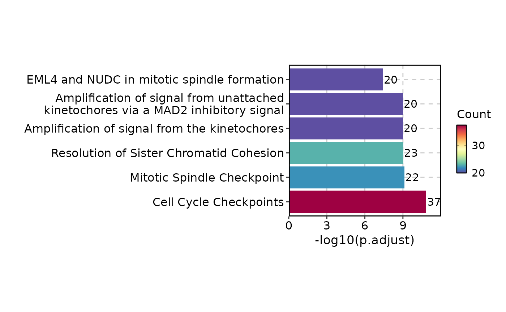
EnrichmentPlot(enrich_example, cutoff = 0.05)
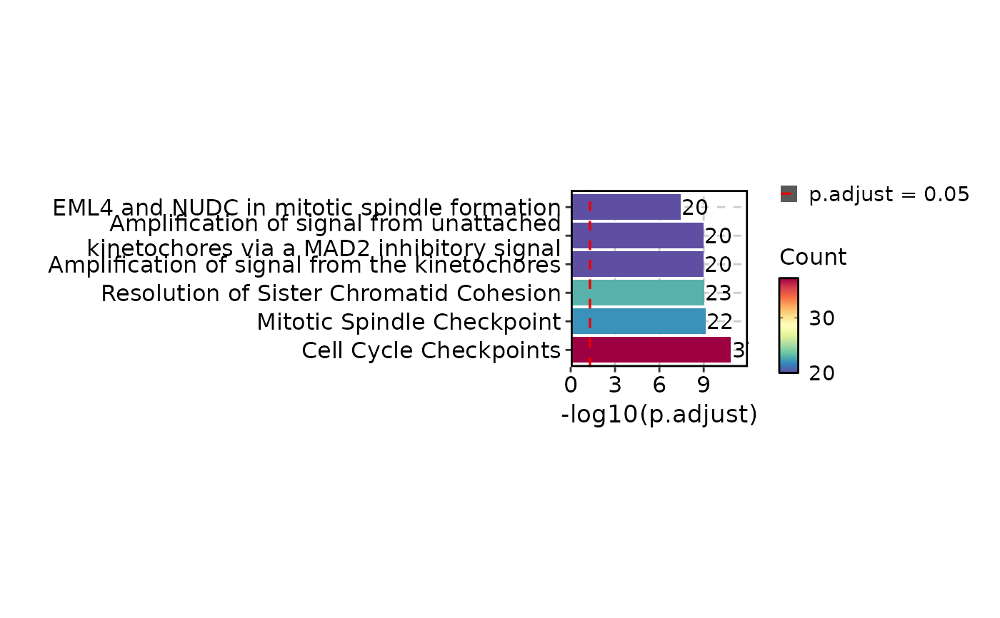
EnrichmentPlot(enrich_example, palette = "Paired")
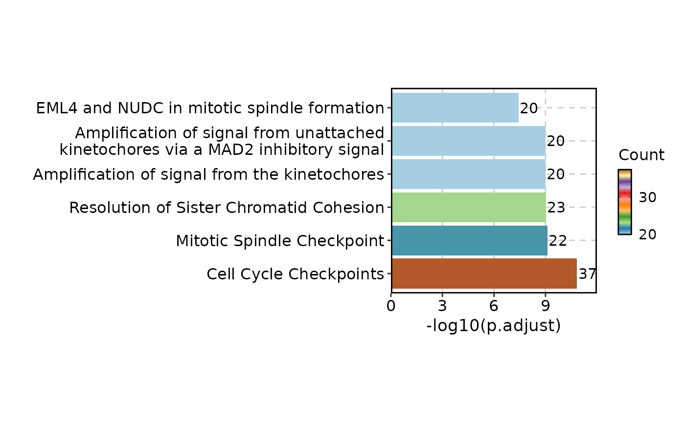
enrich_example$Description <- enrich_example$ID
EnrichmentPlot(enrich_example, plot_type = "heatmap", group_by = "Group",
show_row_names = TRUE, show_column_names = TRUE, cutoff = 0.05)
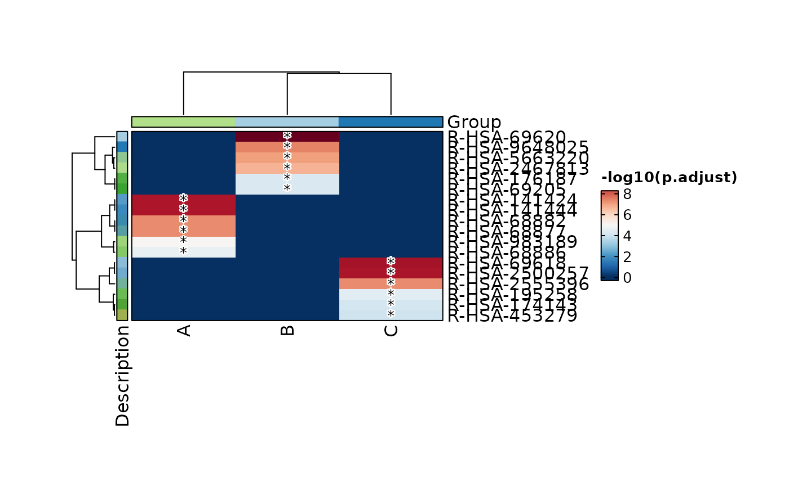
# Multiple databases#'
EnrichmentPlot(enrich_multidb_example, facet_by = "Database", facet_nrow = 2)
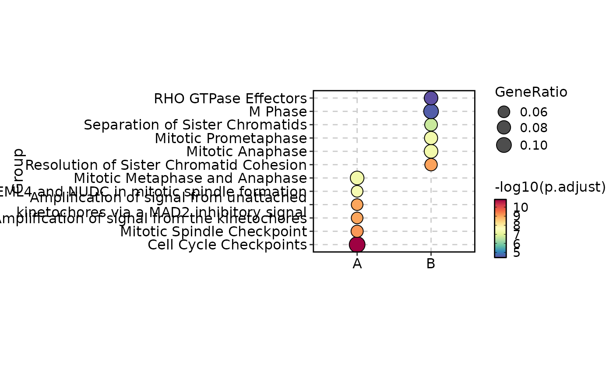
enrich_example$Group <- sample(c("A", "B"), nrow(enrich_example), replace = TRUE)
EnrichmentPlot(enrich_example, plot_type = "comparison", group_by = "Group")
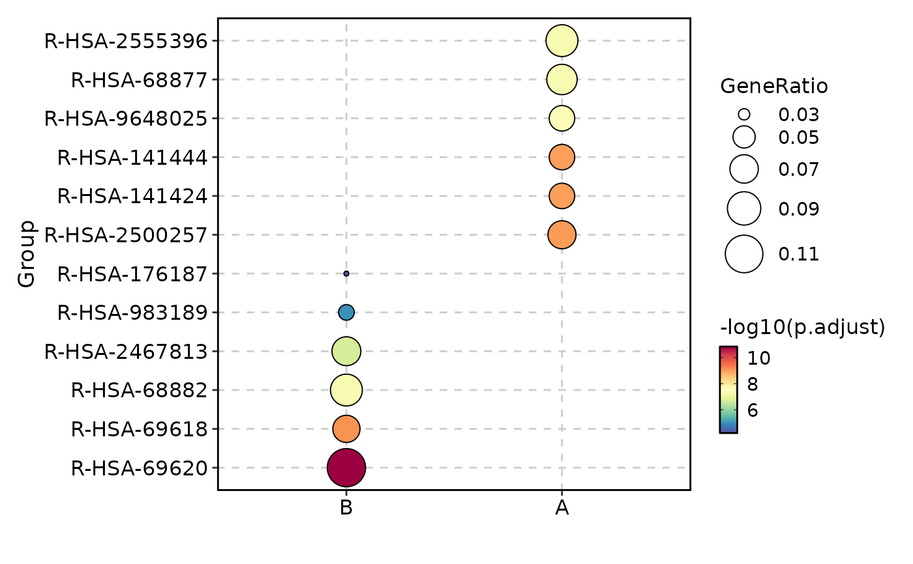
EnrichmentPlot(enrich_example, plot_type = "dot", top_term = 10)
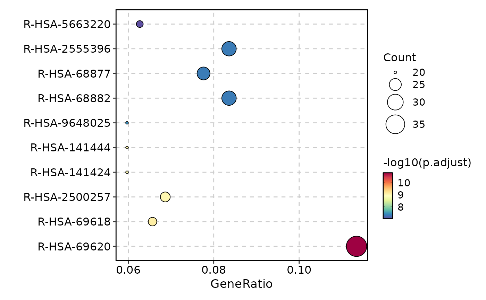
EnrichmentPlot(enrich_example, plot_type = "lollipop", top_term = 10)
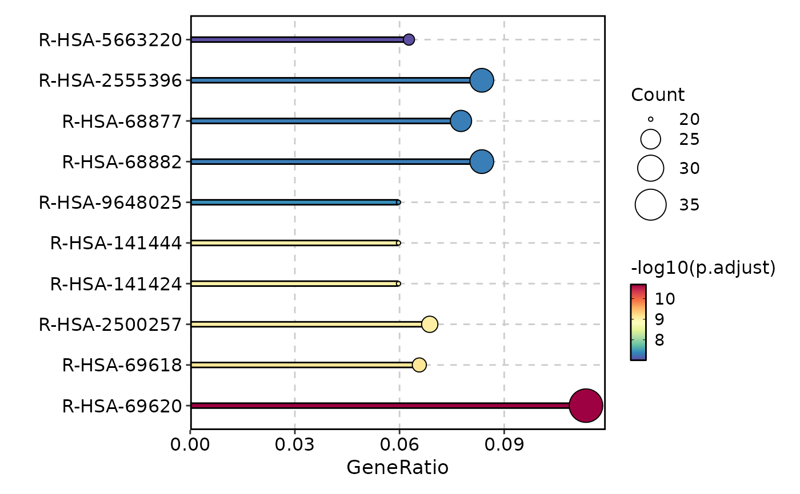
EnrichmentPlot(enrich_example, plot_type = "network")
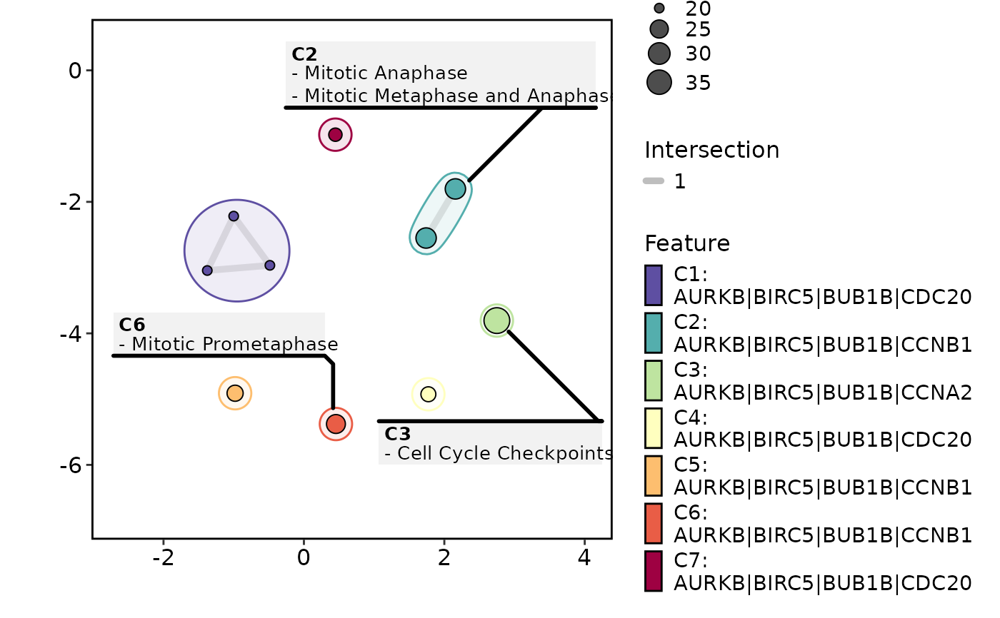
EnrichmentPlot(enrich_example, plot_type = "enrichmap")
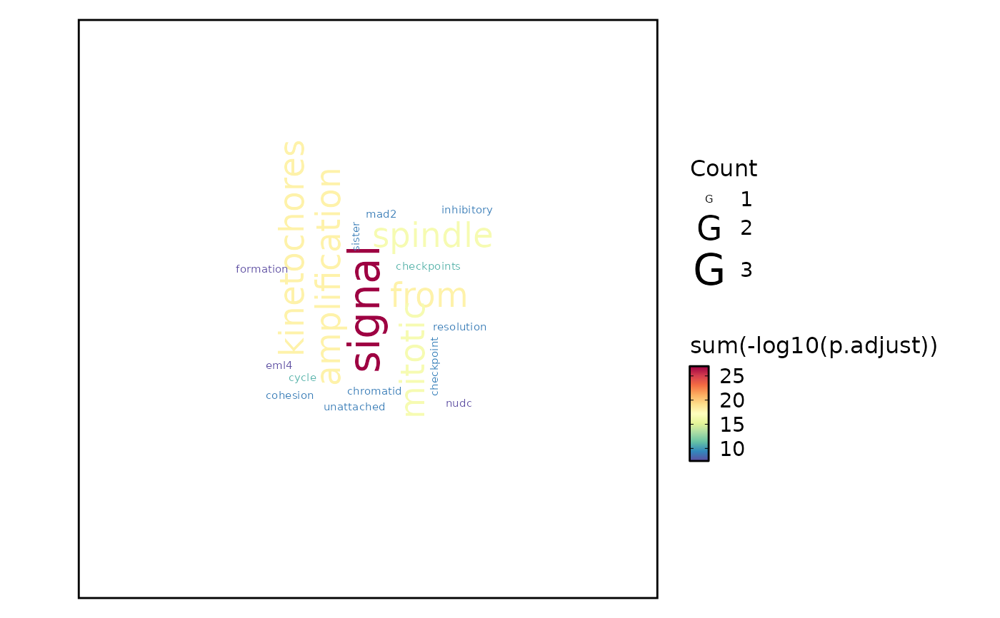
EnrichmentPlot(enrich_example, plot_type = "wordcloud")
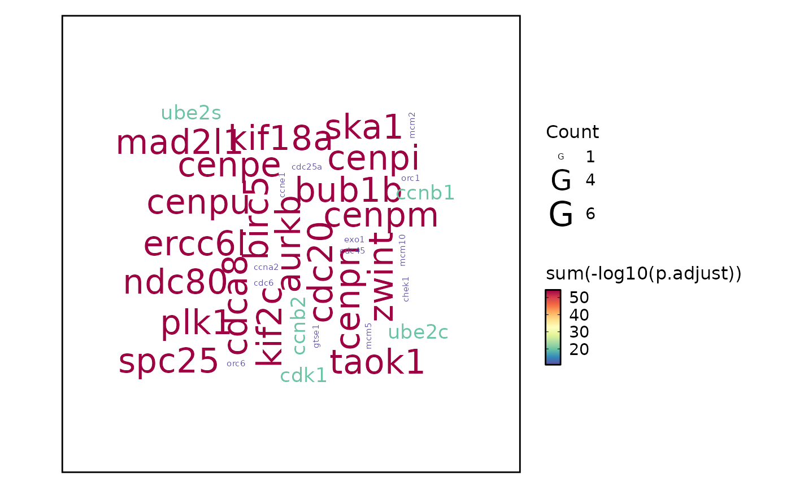
# Wordcloud with feature
EnrichmentPlot(enrich_example, plot_type = "wordcloud", word_type = "feature")
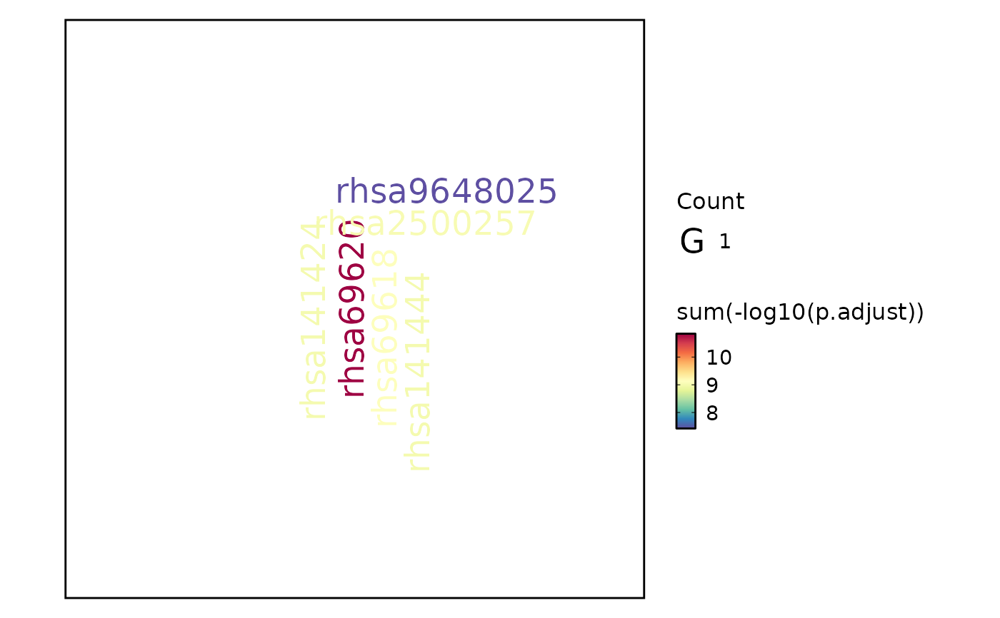
# }